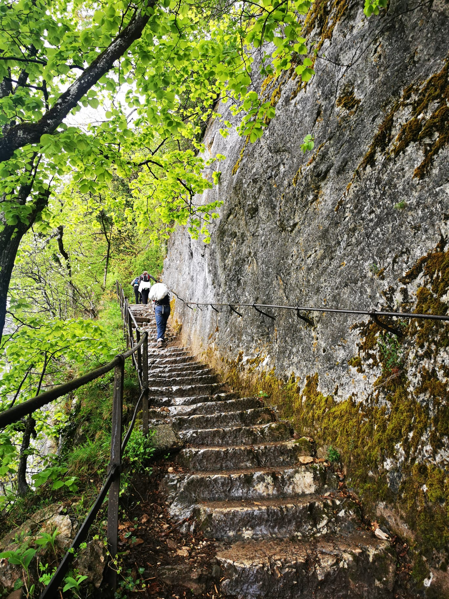
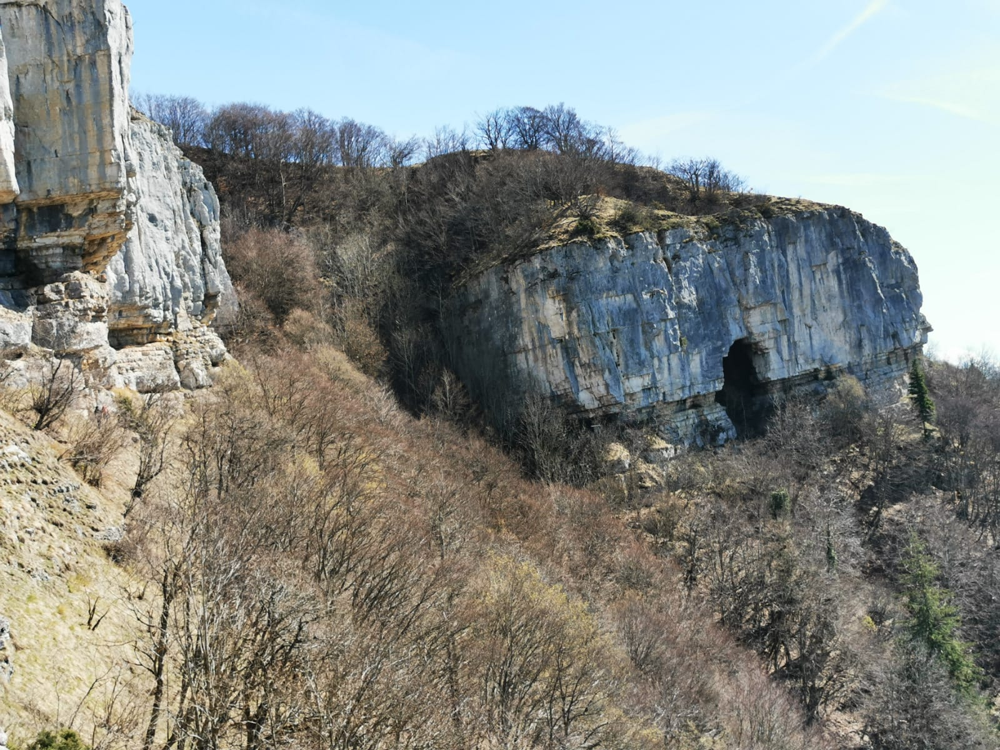

Il y a une multitude de sentiers pour randonner au Salève. L'AGAS ne propose que les chemins officiels (balisés) ne pas dépassant le niveau T2 selon les cotations du Club Alpin Suisse. Pour la montée depuis Veyrier, l'AGAS propose essentiellement 3 sentiers:
 | 
|  |
| Pas de l'Echelle | Grande Gorge | Sentier d'Orjobet |
| 2 heures de montée jusqu'au téléphérique, moyennement difficile, numéro 1 sur la carte ci-dessous | 3 heures de montée, sentier dans les bois, relativement raide par endroits (difficile, numéro 5 sur la carte) | 4 heures de montee, passant par la grotte d'Orjobet et le Trou de la Tine, puis possibilité de longer le Salève par la Corraterie (difficile, numéro 4 sur la carte) |
Au retour, ceux qui n'ont pas laissé leur véhicule à Veyrier font souvent la traversée par la crête (1 heure, belles vues) pour descendre à Croix-de-Rozon (bus 82 et 44 vers la ville de Genève, nous sommes normalement en bas entre 16h et 17h).